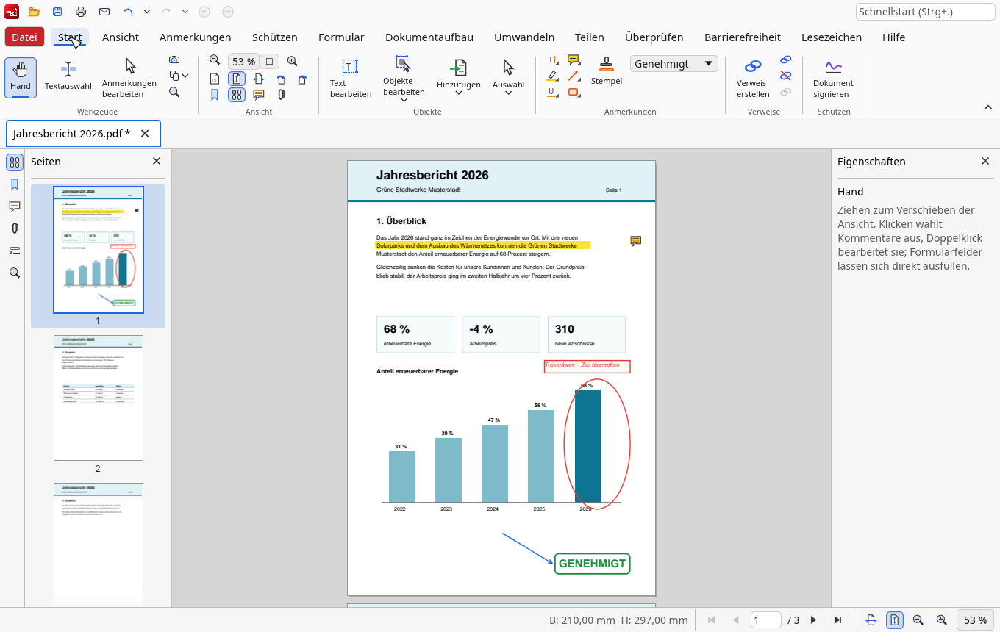
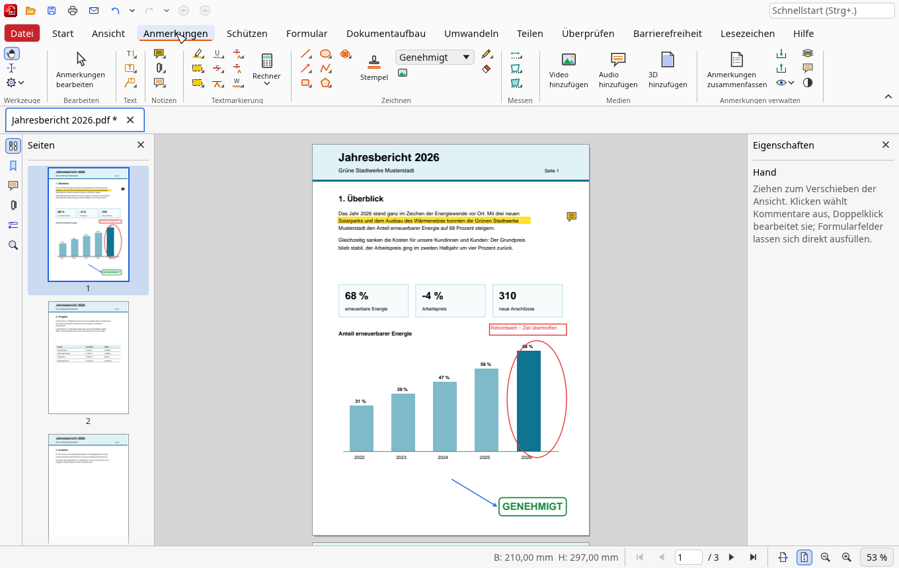
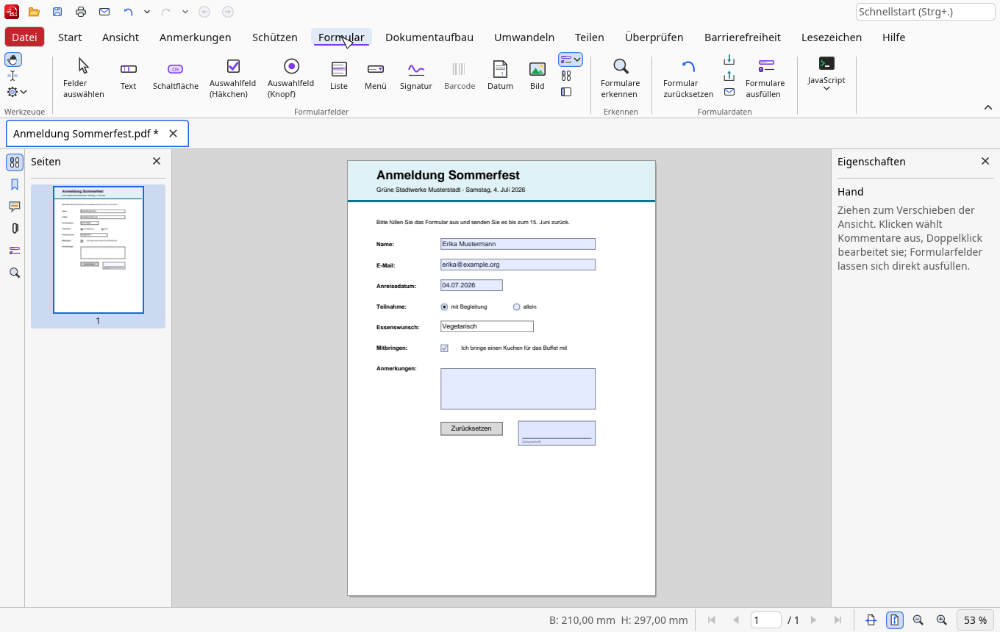
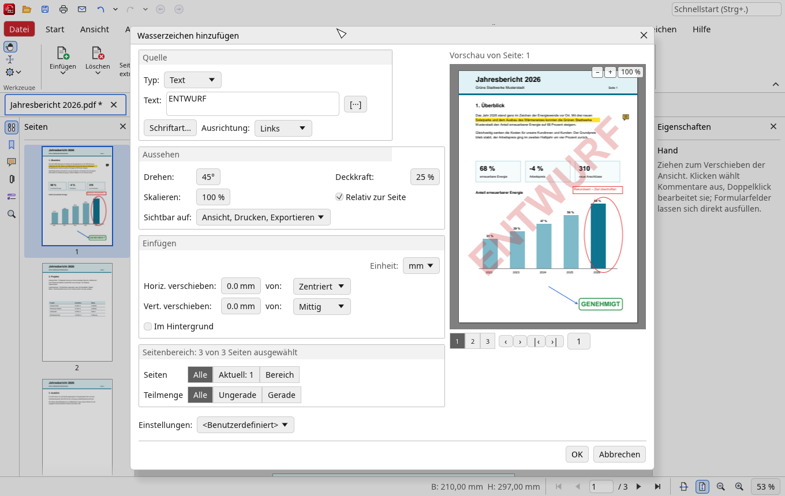
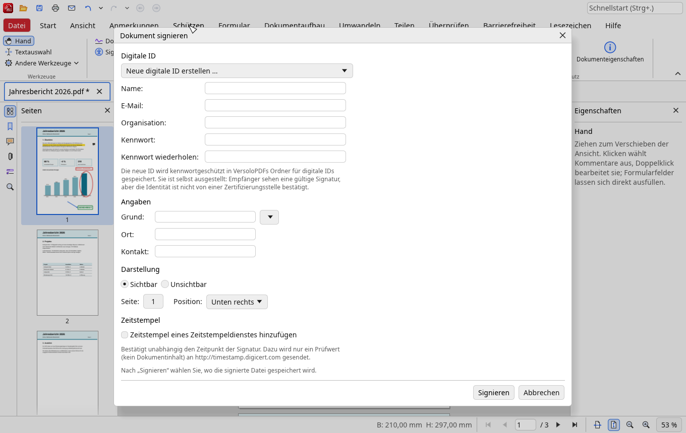
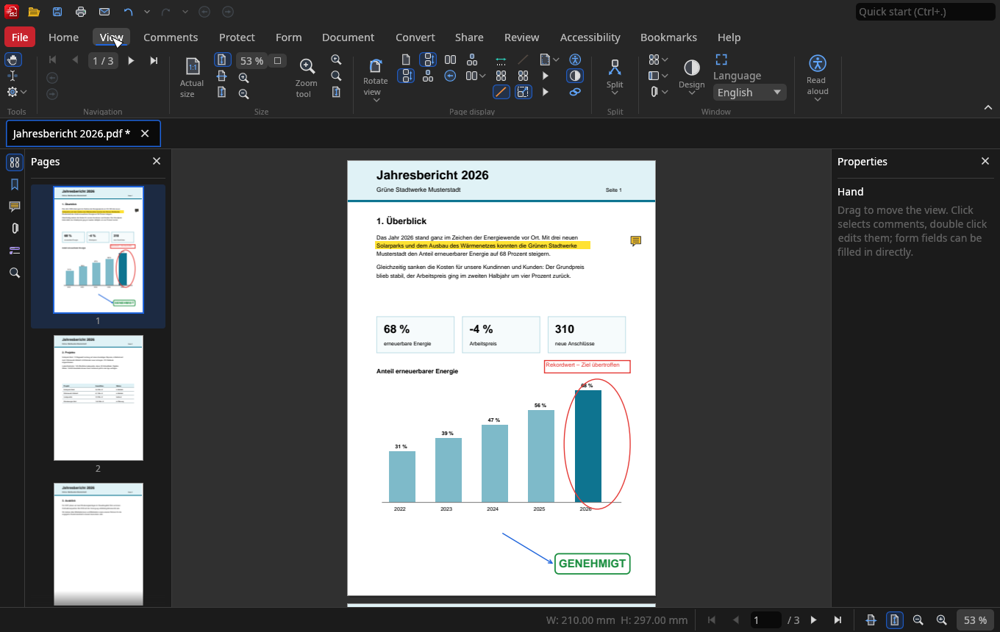

VersoloPDF ist ein quelloffener PDF-Editor mit dem Menüband, das Sie aus Office-Programmen kennen. Ansehen, kommentieren, ausfüllen, signieren und Seiten organisieren – ohne Konto, ohne Abo, ohne Cloud. VersoloPDF is an open-source PDF editor with the ribbon you know from office programs. View, comment, fill in, sign and organise pages – no account, no subscription, no cloud.
Version 1.4 · Windows 10 und 11 (64 Bit) · macOS 11 und neuer (Apple- und Intel-Chips) · MIT/Apache-2.0 Version 1.4 · Windows 10 and 11 (64-bit) · macOS 11 and later (Apple and Intel chips) · MIT/Apache-2.0

Hunderte Befehle, übersichtlich im Menüband angeordnet und über die Schnellsuche (Strg+.) sofort erreichbar.Hundreds of commands, neatly arranged in the ribbon and instantly reachable with the quick search (Ctrl+.).
Schnelle Darstellung, Tabs und eigene Fenster, Seitenlayouts, Lineale, Dunkelmodus, Vollbild und Vorlesen.Fast rendering, tabs and separate windows, page layouts, rulers, dark mode, full screen and read aloud.
Markieren, Notizen, Textfelder, Formen, Wolken, Freihand, Messen, Stempel – sichtbar in jedem PDF-Programm.Highlights, notes, text boxes, shapes, clouds, freehand, measuring, stamps – visible in every PDF viewer.
Ausfüllen und selbst gestalten: Text, Auswahl, Liste, Datum, Bild, Schaltfläche, QR-Code, Signatur – auch automatisch erkannt.Fill in and design: text, choice, list, date, image, button, QR code and signature fields – even detected automatically.
Digitale Signaturen mit eigener digitaler ID, Zertifizieren und Zeitstempel – und Signaturen anderer prüfen.Digital signatures with your own digital ID, certification and time stamps – and check the signatures of others.
Einfügen, löschen, drehen, zuschneiden, zusammenfügen, aufteilen, Wasserzeichen, Kopf- und Fußzeilen, Bates-Nummern.Insert, delete, rotate, crop, merge, split, watermarks, headers and footers, Bates numbering.
Texte und Objekte direkt auf der Seite ändern, ausrichten und anordnen; Lesezeichen und Inhaltsverzeichnis erstellen.Change, align and arrange text and objects right on the page; create bookmarks and a table of contents.
Dokumente vergleichen, Rechtschreibung, Barrierefreiheit; Export als Bild, Text oder Word; PDFs aus Bildern und Office-Dateien.Compare documents, spelling, accessibility; export as image, text or Word; PDFs from images and office files.
Geschützter Modus: Jedes Dokument wird in einem abgeschirmten Hilfsprogramm ohne Zugriff auf Ihre Dateien, das Netz und andere Programme gelesen. Dazu Kennwortschutz mit AES-256, Berechtigungen, sicheres Schwärzen und signierte Updates.Protected mode: every document is read in a shielded helper program without access to your files, the network or other programs. Plus password protection with AES-256, permissions, secure redaction and signed updates.
Markieren Sie Text, setzen Sie Notizen, Pfeile und Stempel. VersoloPDF schreibt zu jeder Anmerkung ihr eigenes Aussehen in die Datei – Ihre Kollegen sehen in jedem PDF-Programm genau das, was Sie sehen.Highlight text, add notes, arrows and stamps. VersoloPDF writes each comment's own appearance into the file – your colleagues see exactly what you see, in any PDF viewer.

Füllen Sie Formulare direkt auf der Seite aus. Oder ziehen Sie eigene Felder auf: Text, Auswahl, Liste, Datum, Bild, Schaltfläche und Signatur. „Formulare erkennen“ legt Felder in leeren Vordrucken automatisch an.Fill in forms right on the page. Or draw your own fields: text, choice, list, date, image, button and signature. "Detect form fields" adds fields to blank forms automatically.

Wasserzeichen, Hintergründe, Kopf- und Fußzeilen, Zuschneiden oder mehrere Seiten pro Blatt: Jeder Dialog zeigt sofort, wie das Ergebnis aussieht. Häufige Einstellungen speichern Sie unter eigenem Namen.Watermarks, backgrounds, headers and footers, cropping or several pages per sheet: every dialog shows the result right away. Save frequent settings under your own name.

Signieren Sie mit Ihrer digitalen ID oder legen Sie in VersoloPDF eine neue an. Die Signatur nach PAdES-Standard schützt das Dokument vor unbemerkten Änderungen. Ein Zeitstempel eines unabhängigen Dienstes belegt den Zeitpunkt, und beim Zertifizieren legen Sie fest, welche Änderungen danach noch erlaubt sind.Sign with your digital ID or create a new one in VersoloPDF. The PAdES signature protects the document against unnoticed changes. A time stamp from an independent authority proves the time, and when certifying you decide which changes are still allowed afterwards.

Ein ruhiges, modernes Menüband mit fester Höhe, das sich auf Wunsch einklappen lässt. Dazu Dunkelmodus, Tastaturbedienung mit Alt-Tasten und eine Schnellsuche für jeden Befehl.A calm, modern ribbon with a fixed height that can be collapsed. Plus dark mode, keyboard operation with Alt key tips and a quick search for every command.

Ein PDF-Editor, der Ihnen gehört – nicht umgekehrt.A PDF editor that works for you – not the other way round.
Keine Testphase, kein Abo, keine Wasserzeichen. Der Quellcode steht unter MIT- oder Apache-Lizenz.No trial, no subscription, no watermarks. The source code is MIT or Apache licensed.
Kein Konto, keine Cloud, keine Nutzungsdaten. Einzige Verbindung: die abschaltbare Suche nach neuen Versionen auf GitHub.No account, no cloud, no usage data. The only connection: the optional check for new versions on GitHub.
Geschrieben in Rust, PDF-Darstellung mit PDFium aus Google Chrome. Skripte und eingebettete Programme werden nie ausgeführt.Written in Rust, PDF rendering with PDFium from Google Chrome. Scripts and embedded programs are never run.
Startet in Sekunden, öffnet auch große Dateien zügig und braucht keine Installation.Starts in seconds, opens large files quickly and needs no installation.
Mit Installer oder ganz ohne Installation – Administratorrechte sind nicht nötig.With the installer or without installing at all – no administrator rights needed.
VersoloPDF-…-windows-x64-setup.exe aus dem neuesten Release laden (ohne Installation: …-windows-x64.zip).
Get the installer VersoloPDF-…-windows-x64-setup.exe from the latest release (without installing: …-windows-x64.zip).
Voraussetzungen: Windows 10 oder 11, 64 Bit. Bleibt das Fenster auf alten Grafikkarten schwarz, hilft der Start mit VersoloPDF.exe --opengl. Linux: aus dem Quellcode bauen (siehe Anleitung).
Requirements: Windows 10 or 11, 64-bit. If the window stays black on old graphics cards, start VersoloPDF.exe --opengl. Linux: build from source (see the instructions).
VersoloPDF-…-macos.zip aus dem neuesten Release laden – ein Programm für Apple- und Intel-Chips, ab macOS 11.
Get VersoloPDF-…-macos.zip from the latest release – one app for Apple and Intel chips, macOS 11 or later.VersoloPDF.app in den Ordner Programme ziehen.
Open the zip and drag VersoloPDF.app into Applications.Auf dem Mac druckt VersoloPDF über den Druckdialog von macOS, erkennt Text mit der Texterkennung von macOS, signiert mit digitalen IDs aus dem Schlüsselbund und hängt Dateien an eine neue Nachricht in Apple Mail oder Outlook an. On the Mac, VersoloPDF prints through the macOS print dialog, recognises text with the text recognition of macOS, signs with digital IDs from the keychain and attaches files to a new message in Apple Mail or Outlook.
Ja – für private und berufliche Zwecke, ohne Einschränkungen. VersoloPDF ist freie Software unter MIT- oder Apache-2.0-Lizenz.Yes – for private and business use, without restrictions. VersoloPDF is free software under the MIT or Apache 2.0 licence.
Nein. VersoloPDF arbeitet nur mit Dateien auf Ihrem Computer. Ins Internet geht es nur, wenn Sie selbst eine Adresse öffnen oder nach neuen Versionen gesucht wird – und das lässt sich unter Datei › Einstellungen › Neue Version abschalten.No. VersoloPDF only works with files on your computer. It only goes online when you open an address yourself or when it looks for new versions – which you can switch off in File › Settings › Updates.
Ja. Jede Anmerkung und jedes Formularfeld wird mit eigenem Aussehen gespeichert. Änderungen werden als Ergänzung an die Datei angehängt, die ursprüngliche Struktur bleibt erhalten.Yes. Every comment and form field is saved with its own appearance. Changes are appended to the file, the original structure is kept.
Unter Datei › Einstellungen › Neue Version. VersoloPDF lädt das Paket von GitHub, prüft seine digitale Unterschrift und SHA-256-Prüfsumme, installiert es und startet neu. Nicht unterschriebene Pakete werden nicht installiert.In File › Settings › Updates. VersoloPDF downloads the package from GitHub, checks its digital signature and SHA-256 checksum, installs it and restarts. Unsigned packages are not installed.
Melden Sie ihn gern als Issue auf GitHub. Hilfe › Fehlerprotokoll öffnen zeigt ein Protokoll, das bei der Suche hilft; es enthält keine Inhalte Ihrer Dokumente.Please report it as an issue on GitHub. Help › Open error log shows a log that helps finding it; it contains nothing of your documents.
Kostenlos, quelloffen und in einer Minute startklar.Free, open source and ready in a minute.